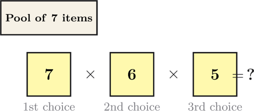
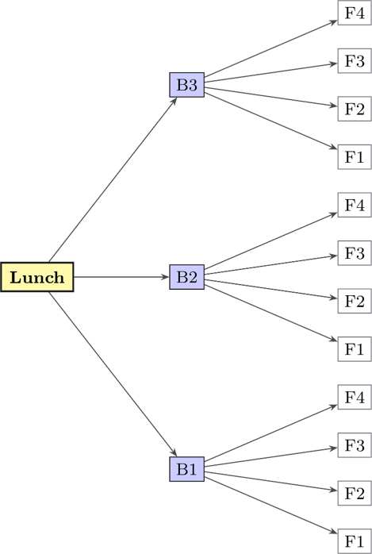
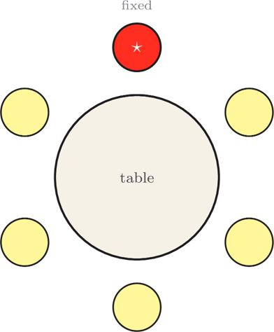
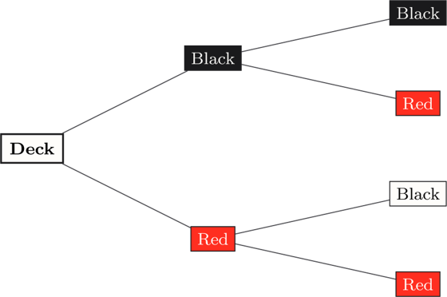

The Counting Codex
Nine challenges built around the counting rules: $k^n$ for equal outcomes, the multiplication rule, factorials, permutations $_nP_r$, and combinations $_nC_r$. Drawn from Week 4.
Fundamental counts
10 points eachSix-Toss Saga
You toss a fair coin six times in a row. How many possible sequences of Heads and Tails can result?
Order Up
The diagram below shows ordered slots being filled from a pool. Read the number of choices available for each slot, multiply them together, and give the total number of ordered arrangements.

Factorial Frenzy
What is $6!$ (six factorial)?
Selections and arrangements
20 points eachKai Bar Combos
A kai bar lets you build a lunch pack by choosing one bun and one filling. Count the total number of distinct bun-and-filling combinations shown in the tree diagram below.

Squad Selection
A coach must choose a squad of 4 players from a group of 12. Order does not matter. How many different squads are possible?
Round the Haus
Six people are to be seated around a circular table. The diagram shows one seat fixed as the reference point. Use the circular-permutation formula to count the distinct seating arrangements for the remaining seats. How many are there?

Multi-step & dependent counting
30 points eachNo Returns
Two cards are drawn from a standard 52-card deck without replacement. Using the probability tree below, find the probability that both cards are red. Multiply the branch fractions along the correct path. Round to 3 decimal places.

PIN Forge
A 5-digit PIN uses only the digits 0–9, and repetition is allowed. How many different PINs are possible?
Chain Rule
A student's enrolment satisfies $P(\text{Biology}) = 0.8$ and $P(\text{Algebra} \mid \text{Biology}) = 0.25$.
Find $P(\text{Algebra} \cap \text{Biology})$ — the probability the student takes both. Express as a decimal.